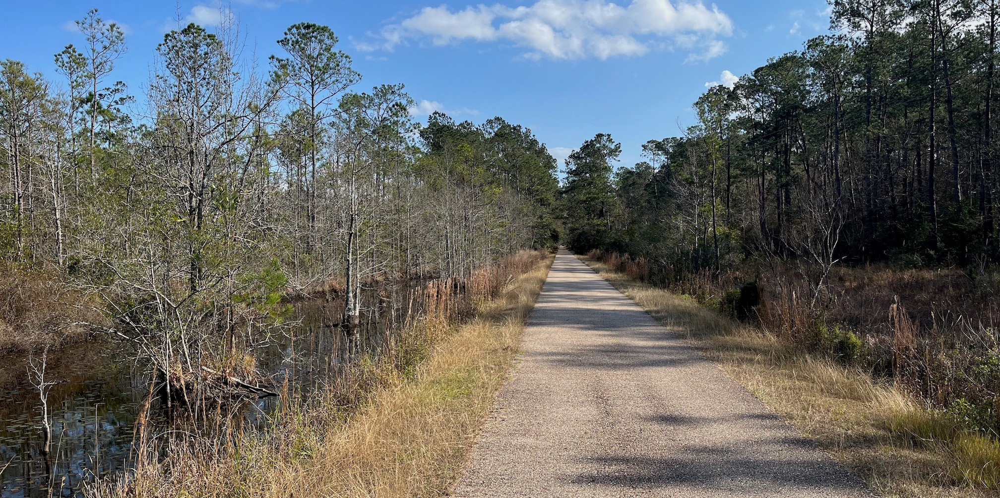
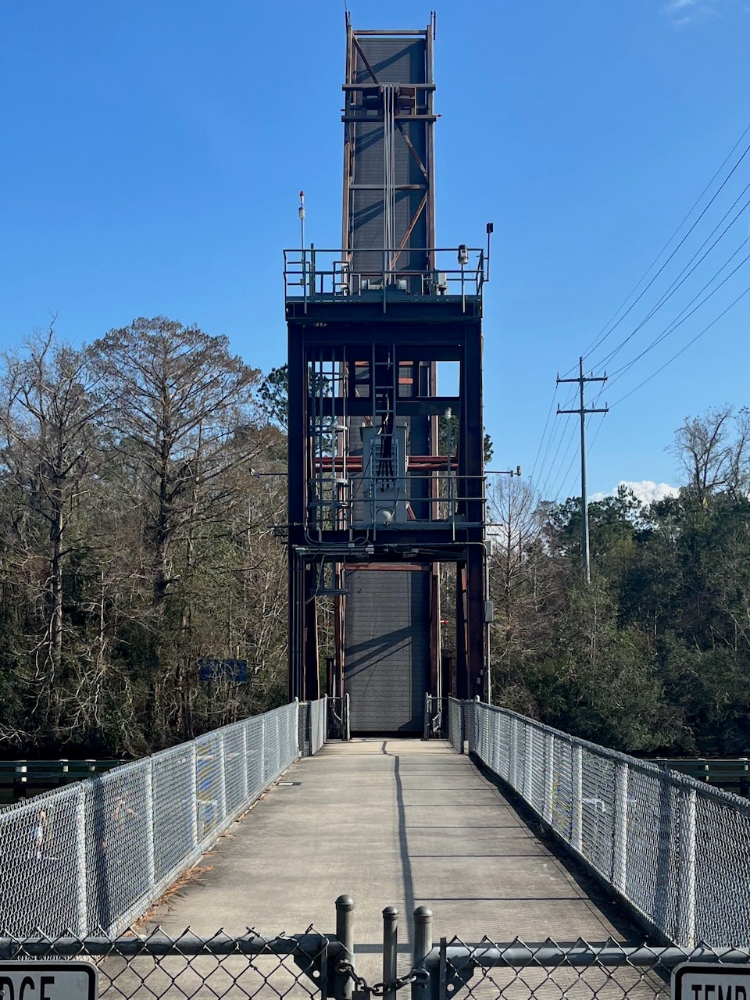
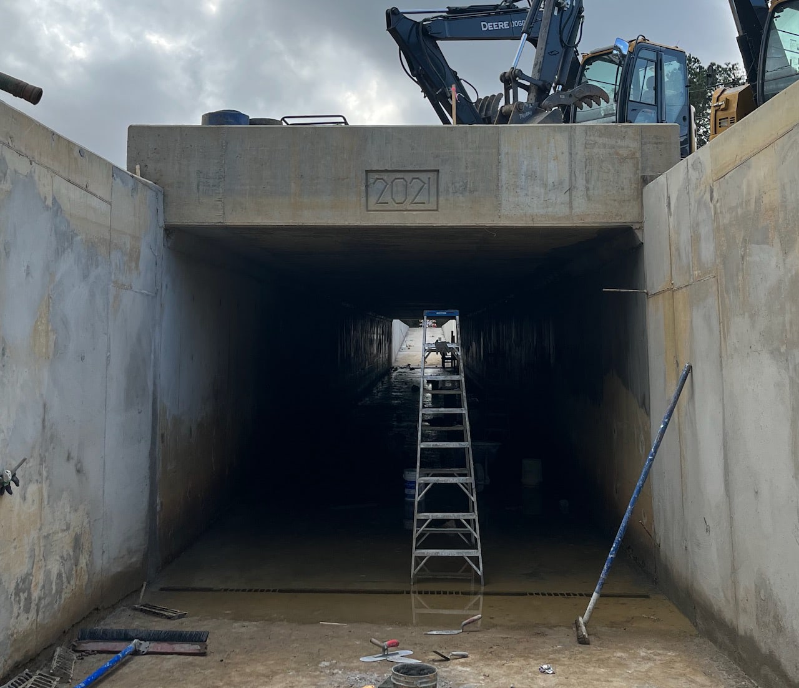

Tammany Trace
December 31, 2021 • 27.8 miles
The moments at the boundary between two larger stretches of time feel inconsequential. Why can I drink or vote tomorrow but not today? What’s the point of reminiscing on the last day of a year that felt every bit the same as the previous one? That’s what I told myself going into today: it only happens to be the last day of the year, no need to put any thought or emotional weight into it.
The Tammany Trace is another former rail line converted to paved trail, from Covington, Louisiana to Slidell. The Lyft driver said Covington looked like a bad neighborhood when we drove by decaying row houses, and offered to stay near the little town square if I changed my mind. But time unrelentingly moves forward, and so must I. Wait, I wasn’t supposed to be thinking about that.
Anyway, the trail begins at what used to be the Covington train station, with the “world’s largest” statue of Ronald Reagan. A couple kicks and it was behind me. The air smelled like a campfire.
Soon I rolled into the historic town of Abita Springs. Everything here was like a designed set, from the former train station converted into town museum, eponymous brew pub, and tourist magnet mystery house. A group of three were sitting in chairs outside the entrance, and the man on the left turned to me as I approached. “You’ve been here before.” “Not yet.” “Good answer.” They all got up and followed me in to take my admission fee, and let me wander around. This place is less like the Santa Cruz Mystery Spot and more like a tiny Wall Drug, if that means anything to you. Goofy alligator taxidermy and New Orleans bric-a-brac were plastered onto every surface and crammed into every corner. Easily worth the $5, and located directly on the trail.
In hindsight, I’m glad Abita Springs was near the beginning. The trail was two long straightaways afterward, one going south for nine miles and one going east for fifteen. I would have been too tired to appreciate it if I’d come from other way. I’m also glad I didn’t stop for a beer or lunch and then keep going, more for the risk of getting sleepy than anything else. A couple times over the rest of the afternoon, I would register that the scenery looked like Saint Denis from Red Dead Redemption 2 — a video game location based on New Orleans. When I first played the game, I would think about how its scenery looked like New Orleans. It’s a wonder I went to a college.
That’s the downside of rails to trails. It’s not like the original railroads were planned to go through the most scenic and interesting areas of the country. Not that this wasn’t beautiful, it absolutely was, but apart from the sections that ran through small downtowns, there wasn’t much to distract me from doing an internal year in review.
The trail was closed and blocked off in three separate places. The first was a still-under-construction tunnel going under a medium-busy road. It looked finished enough, but there was brackish standing water the whole way through. So I walked around the barricade and jaywalked across the street. This must have been how people went before, right? No problem.
The second blockage was a little more serious: another barricade with loose chain link fence branching off either side into the woods. A benevolent rule-breaker had already peeled back a small section of the fence, making it no issue to scramble under. This closed-off section went under Interstate 12, which was itself under construction, and I guess sending dirt and debris and chaos below to the trail. But I traversed it just fine, and there was another hole in the chain link fence on the other side. No problem.
Third time’s the charm. Approaching Bayou Lacombe, a black snake crossed the trail in front of me. Superstitious omen? Voodoo? I rolled up to a third barricade, once again with the extra fencing pushed aside. The victory was temporary, as it led to a drawbridge stuck in the raised position. There was no other way in sight over the river. A sign on the drawbridge house noted that trail facilities were closed on holidays, including New Year’s Eve. There’s no escaping it!
So I had to double back and venture down a two lane road with no shoulder and no sidewalk through Lacombe. Harrowing. A dog leapt from its front porch and tore down the driveway into the road to bark after me. I shouted “No!” over my shoulder, at the same time its owner called it back, and the dog listened to at least one of us. The road went by a gigantic tent full of fireworks for sale. I bought a Gatorade there from a guy in a t-shirt that said “World’s Best Father” with the “th” scratched out and replaced with “rt”.
For no reason other than a stubborn completionism compulsion, once I crossed the river on the road and made my way back to the trail, I made sure to go to the other side of the raised drawbridge. I threw away the empty Gatorade bottle in the trash can there. Guess no one will come by to empty it for a while because tomorrow’s a holiday too. At least the rest of the way was impeccable trail, smooth and almost devoid of other people. I was even able to record and tweet a video without slowing down or stopping.
I still love doing this: starting in one place, ending in another, and absorbing the inbetween at a human pace. I guess that’s how time works too. Maybe some stretches are monotonous, repetitive, or seem to offer little. Others can be wildly exciting and even ones you’d eagerly return to. And every once in a while something unexpected comes up and throws off your plans. Happy New Year.
